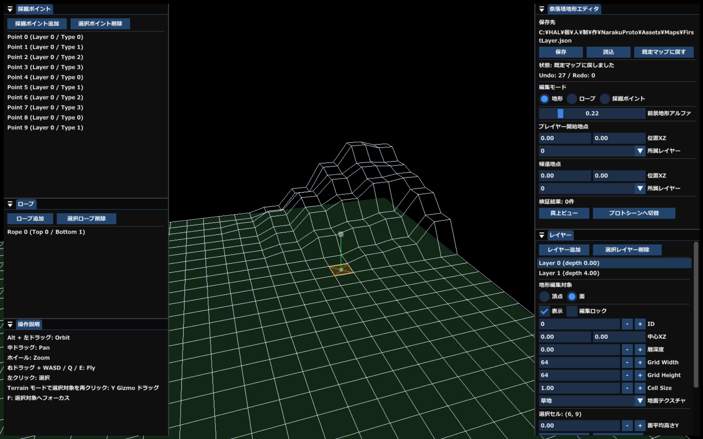
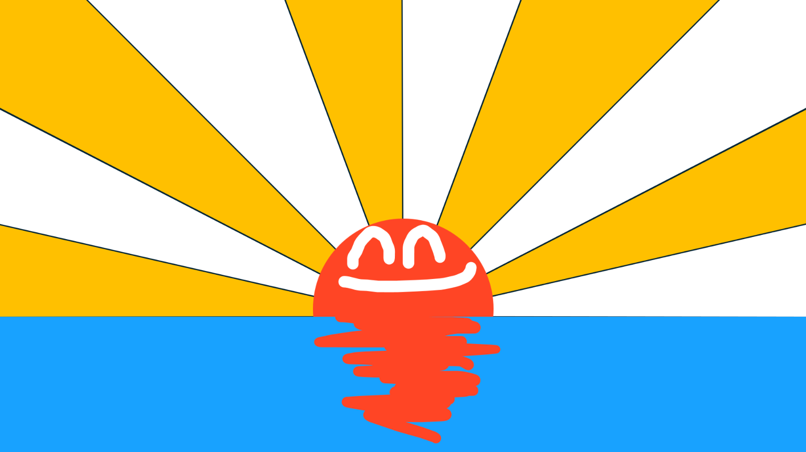
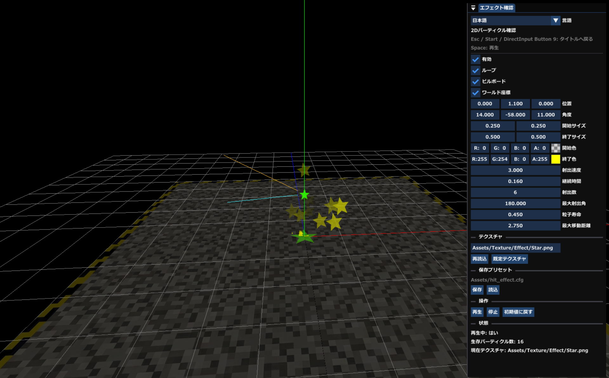
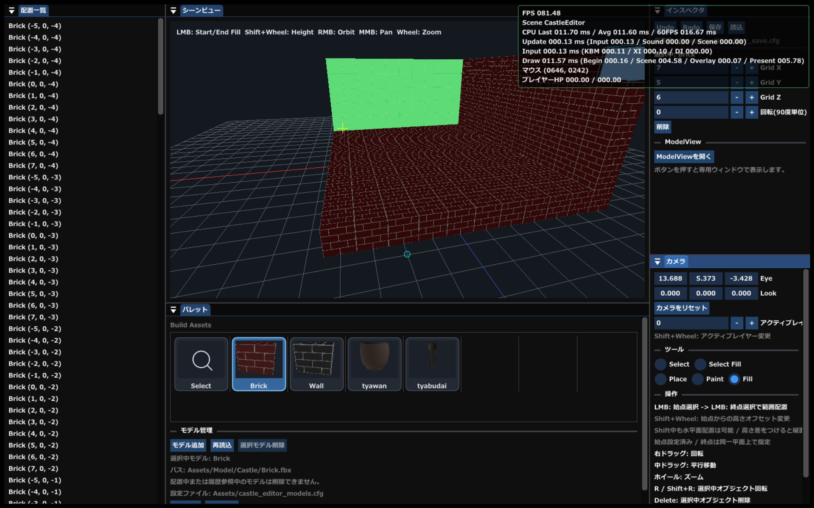
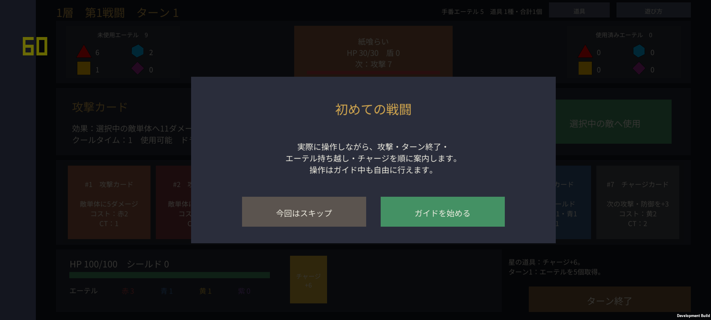

GAME PROGRAMMER / TOOL DEVELOPER
REALTIME VFX READY
遊びと制作環境を、
同じ熱量でつくる。
C++ / DirectX11とUnityを中心に、ゲームシステム、物理挙動、Editor・ImGui・WPFによる制作支援ツールを開発しています。

奈落塔地形自動生成と専用エディタ
↗
PROJECT INDEX
プロジェクト
ゲームの仕組み、物理シミュレーション、制作ツール。担当した実装と設計の判断を作品ごとにまとめました。
14件のプロジェクト
Personal / DirectX11
奈落塔 技術力賞
接続条件から地形を自動生成する探索ローグライト。地形ピースを編集・検証・発行する専用エディタも制作。
個人制作の担当 ゲームシステム、描画、エディタとデータ検証
- C++
- DirectX11
- ImGui

Team / Unity
CreatorKousien
フィールド探索とカードバトルのチーム制作。ScriptableObjectを一覧・検索・編集できるUnity Editor拡張を実装。
チーム制作の担当 プレイヤー・敵・UI、制作ツール
- Unity
- C#
- Editor

Personal / Physics
チンチロローグライク 構成力賞
ダイスの衝突と回転を自作し、静止した面を出目としてゲームルールに接続。
個人制作の担当 OBB衝突、剛体の挙動、ゲームルール
- C++
- OBB
- RigidBody
WIND / SPRING / FIREWORK
Personal / Simulation
Physics & Particle Lab
ばね、風、後流、花火を数値から観察する物理実験環境。
- C++
- DirectX11
- ImGui
Personal / Unity
AssetBundle Loading Sample
Bundle生成から実行時ロードまでを2Dシューティングで検証。
- Unity
- C#
- AssetBundle

Personal / Desktop tool
FileZipper
提出ファイルの抽出・命名・Zip化を一本化したWPFツール。
- C#
- WPF
- .NET 8
PMX→glTF
Personal / Graphics tool
pmxConverter
ボーン・モーション・ウェイトを編集してglTFへ出力。
- C++20
- OpenGL
- ImGui

Personal / Unity Physics
JoyaBellBozu
二重振り子をRK4で計算する鐘つきゲーム。
- Unity
- C#
- RK4
DEPOTWORKSPACE
Learning / Version control
Perforce / P4V
Workspace操作とバージョン管理の基本を学習。
- Perforce
- P4V

Personal / DirectX11
仕事猫：無限残業編
設定UIと実行中に調整できるエフェクト制作環境を実装。
- C++
- DirectX11
- ImGui

Team / DirectX11
Buns&Party
料理・納品アクションと、調整・保存基盤をチームで制作。
- C++
- ImGui
- JSON
> NAME_
ATK 42 / SPD 18
> BATTLEPersonal / Console
ネームバトラー
文字列から能力値を生成するターン制コンソールゲーム。
- C
- Console

Personal / Editor
タワーディフェンス
3Dグリッド配置とマップ保存を扱うステージエディタ。
- C++
- DirectX11
- ImGui

Personal / Game design
Lost Page
4色のエーテルとカードコストを結び付けたデッキ構築ローグライト。
- Unity
- C#
- Game Design
0Projects
0Awards
0Certifications
0Languages & Tools
SKILLS & TOOLS
扱える言語・制作環境
実装だけでなく、調整・検証・チーム運用まで含めて制作しています。
Game / Graphics
Development
INTERACTIVE CLICK VFX
クリックエフェクトをカスタム
選んだエフェクトとカラーが、このサイト全体のクリック演出にそのまま反映されます（個別作品ページでも有効）。左のプレビューやページ上の好きな場所をクリックして試せます。
AWARDS & CERTIFICATIONS
受賞歴・資格
受賞歴
- 技術力賞奈落塔 ↗ＨＡＬ３校合同学内コンテスト
- 構成力賞チンチロローグライク ↗ＨＡＬ３校合同学内コンテスト
資格
- システムデザインスキル情報処理活用能力検定（Ｊ検）／Ｊ検 情報システム試験
- システムエンジニア認定情報処理活用能力検定（Ｊ検）／Ｊ検 情報システム試験
- 基本スキル情報処理活用能力検定（Ｊ検）／Ｊ検 情報システム試験
- ＣＧエンジニア検定ベーシックＣＧエンジニア検定
- 情報活用試験 ２級情報処理活用能力検定（Ｊ検）
NEXT STAGE
See more on GitHub ↗